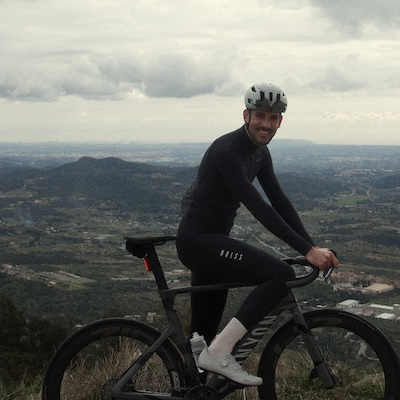

La història darrere de Summit
Fet per un ciclista,
per a ciclistes que entrenen seriosament.
Summit no va néixer com una idea de startup. Va néixer com un problema d'entrenament — un que massa amateurs seriosos coneixen de memòria.

Jordi Espanyol
Fundador · Project Summit
Sóc ciclista amateur i desenvolupador de programari, amb base a Barcelona. Com molts amateurs seriosos, entreno amb constància, competeixo de tant en tant i em prenc el rendiment seriosament — sense el pressupost ni el temps d'un professional.
Vaig preparar La Traka 360 —360 km de gravel en un sol dia— amb tres apps separades: una per a l'entrenament, una per a la recuperació, una per a la nutrició. Cap es parlava amb les altres. Copiava números a mà, pagava tres subscripcions i, al final de cada setmana, tenia dades arreu i claredat enlloc.
Sabia què havia entrenat. Poques vegades sabia què havia de fer a continuació — o per què.
Summit és la meva resposta a aquest problema. No una de teòrica: és la plataforma amb què vaig preparar al 100% la meva Gran Diagonal, i la que m'hauria agradat tenir quan mirava un gràfic de TSB sense saber què fer-hi.
El problema · La solució
El problema
Massa apps. Massa poca claredat.
Els amateurs seriosos fan servir de mitjana entre tres i cinc apps de fitness alhora. Cadascuna captura una part del panorama — activitats, mètriques de salut, nutrició, càrrega d'entrenament — però cap ho sintetitza en una decisió clara.
Acabes sabent què ha passat. No què has de fer.
La solució
Una plataforma. Decisions clares.
Summit integra càrrega d'entrenament, recuperació guiada per VFC, anàlisi de potència i nutrició en un únic motor adaptatiu. No només et mostra dades — et diu què fer demà i per què.
El pla es reescriu al voltant de la teva vida. Et saltes una sessió. Et poses malalt. Viatges. Summit s'ajusta sense que hi hagis de pensar.
Principis de disseny
Dades en decisions
Cada mètrica de Summit existeix per produir una recomanació. Si un número no canvia el que fas, no hauria de ser a la pantalla.
S'adapta a la vida real
Els atletes es posen malalts, viatgen i es salten sessions. Un pla que no contempla això no és un pla — és una llista de desitjos. Summit reescriu al voltant de la realitat.
Seriós, no complicat
La ciència professional no hauria de necessitar una llicenciatura en ciències de l'esport per interpretar-la. Summit parla en termes d'entrenament, no en argot.
A punt per entrenar més intel·ligent?
Summit ja és a l'App Store. Descarrega-la, connecta Strava i comença a rodar amb un pla que de debò et coneix.